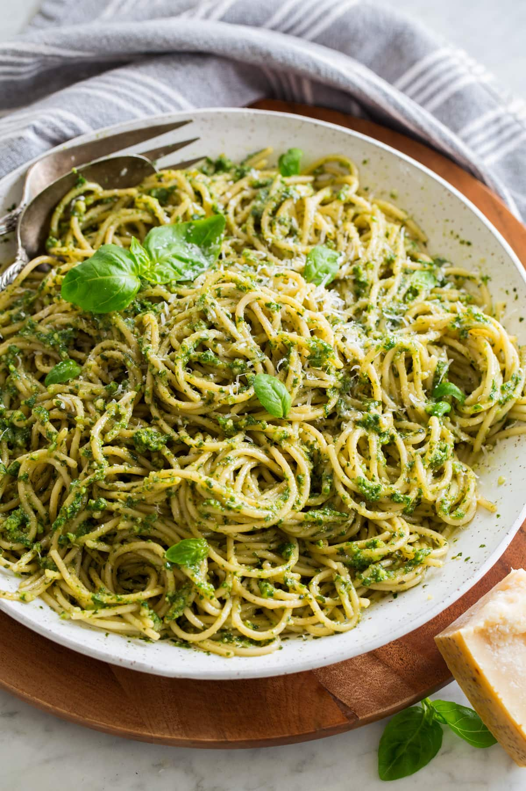

Pesto Pasta Recipe

Ingredients
- 12 oz dry spaghetti
- Salt
- 3 Cups fresh basil leaves
- 1/2 cup parmesan
- 1/4 cup pine nutes
- 2 medium garlic cloves
- 1/2 cup extra virgin oil
- 1/2 cup pasta water
Steps
- Cook spaghetti in salted water
-
Make pesto sauce by blending basil leaves, parmesan, pine nutes and
garlic
- Toss pasta and pesto after draining spaghetti